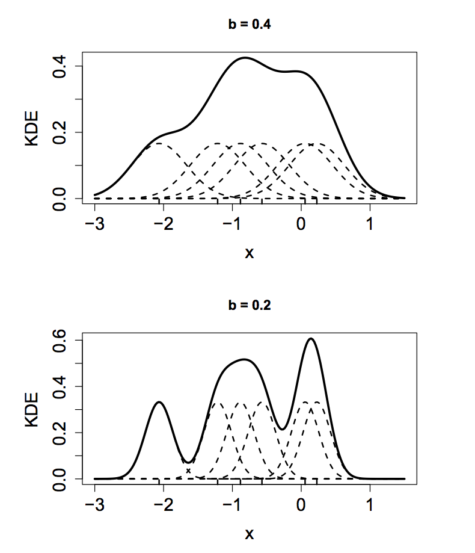

Data Samples
Suppose we are presented with a set of data observations \(y_1, y_2, \ldots, y_n\).
- In this course we will often assume that the observations are realizations of random variables \(Y_1, Y_2, \ldots, Y_n\), where \(Y_i \sim F\), \(\forall i\).
- That is, we will assume \(Y_i\) all come from the same distribution.
- In the case of financial data, we will also view the observations \(y_1, y_2, \ldots, y_n\) as being ordered by time.
- This is referred to as a time series.
Time Series Data Example

Histogram
Suppose we have dataset \(y_1, y_2, \ldots, y_n\) drawn from the same distribution \(F\).
- We typically don't know \(F\) and would like to estimate it with the data.
- A simple estimate of \(F\) is obtained by a histogram.
A histogram:
- Divides the possible values of the random variable(s) \(y\) into \(K\) regions, called bins.
- Counts the number of observations that fall into each bin.
Histogram of SP500 Daily Returns

Kernel Density Estimation
Histograms are crude estimators of density functions.
- The kernel density estimator (KDE) is a better estimator.
- A KDE uses a kernel, which is a probability density function symmetric about zero.
- Often, the kernel is chosen to be a standard normal density.
- The kernel has nothing to do with the true density of the data (i.e. choosing a normal kernel doesn't mean the data is normally distributed).
Kernel Density Estimation
Given random variables \(Y_1, Y_2, \ldots, Y_n\), the KDE is
\[\widehat{f(y)} = \frac{1}{nb} \sum_{i=1}^n K\left(\frac{Y_i - y}{b}
\right).\]
Kernel Density Estimation
The KDE superimposes a density function (the kernel) over each data observation.
- The bandwidth parameter \(b\) dictates the width of the kernel.
- Larger values of \(b\) mean that the kernels of adjacent observations have a larger effect on the density estimate at a particular observation, \(y_i\).
- In this fashion, \(b\) dictates the amount of data smoothing.
Illustration of KDE Estimator
This plot was taken directly from Ruppert (2011).
Kernel Density Bandwidth
Choosing \(b\) requires a tradeoff between bias and variance.
- Small values of \(b\) detect fine features of the true density but permit a lot of random variation.
- The KDE has high variance and low bias.
- If \(b\) is too small, the KDE is undersmoothed or overfit - it adheres too closely to the data.
Kernel Density Bandwidth
- Large values of \(b\) smooth over random variation but obscure fine details of the distribution.
- The KDE has low variance and high bias.
- If \(b\) is too large, the KDE is oversmoothed or underfit - it misses features of the true density.
KDE of S&P 500 Daily Returns

KDE of S&P 500 Daily Returns
The KDE of the S&P 500 returns suggests a density that resembles a normal distribution.
- We can compare the KDE with a normal distribution with \(\mu = \hat{\mu}\) and \(\sigma^2 = \hat{\sigma}^2\), where
\[\hat{\mu} = \frac{1}{n}\sum_{i=1}^n y_i\]
\[\hat{\sigma}^2 = \frac{1}{n} \sum_{i=1}^n (y_i - \hat{\mu})^2.\]
KDE of S&P 500 Daily Returns
- We can also compare the KDE with a normal distribution with \(\mu = \tilde{\mu}\) and \(\sigma^2 = \tilde{\sigma}^2\)
\[\tilde{\mu} = \text{median}\left(\{Y_i\}_{i=1}^n\right)\]
\[\begin{split}\tilde{\sigma}^2 & = \text{MAD}\left(\{Y_i\}_{i=1}^n\right) =
\text{median}\left(\{|y_i - \tilde{\mu}|\}_{i=1}^n\right).\end{split}\]
Comparison of KDE with Normal Densities

Comparison of KDE with Normal Densities
Outlying observations in the S&P 500 returns have great influence on the estimates \(\hat{\mu}\) and \(\hat{\sigma}^2\).
- As a result, a \(N(\hat{\mu}, \hat{\sigma})\) deviates substantially from the KDE.
The median, \(\tilde{\mu}\), and median absolute deviation, \(\tilde{\sigma}^2\), are less sensitive (more robust) to outliers.
- As a result, a \(N(\tilde{\mu}, \tilde{\sigma})\) deviates less from the KDE.
- The fit is still not perfect - asset returns are often better approximated with a heavy tailed distribution, like the \(t\).